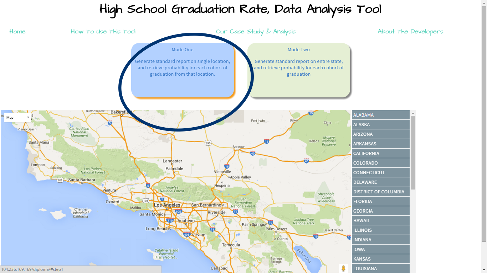
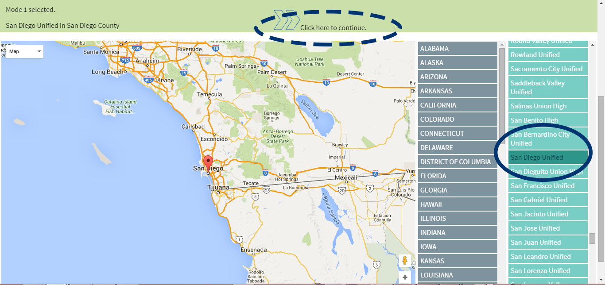
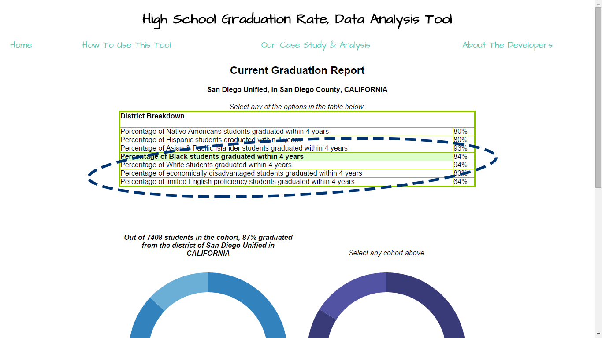
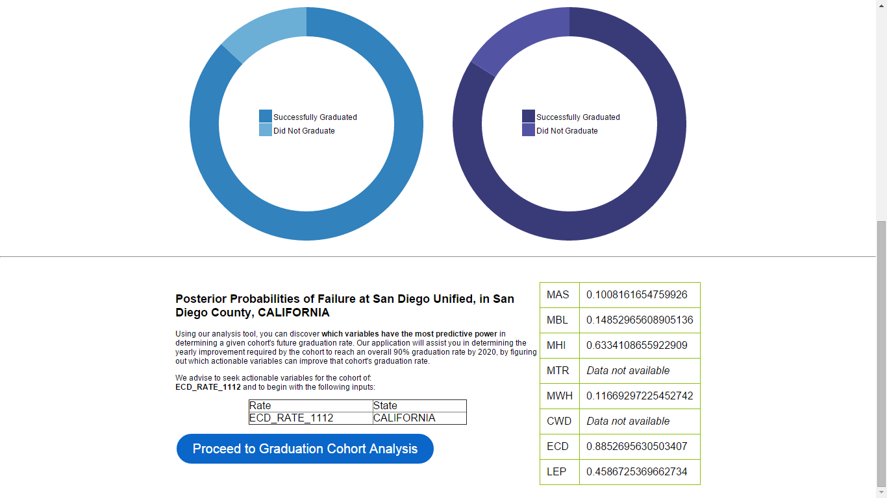
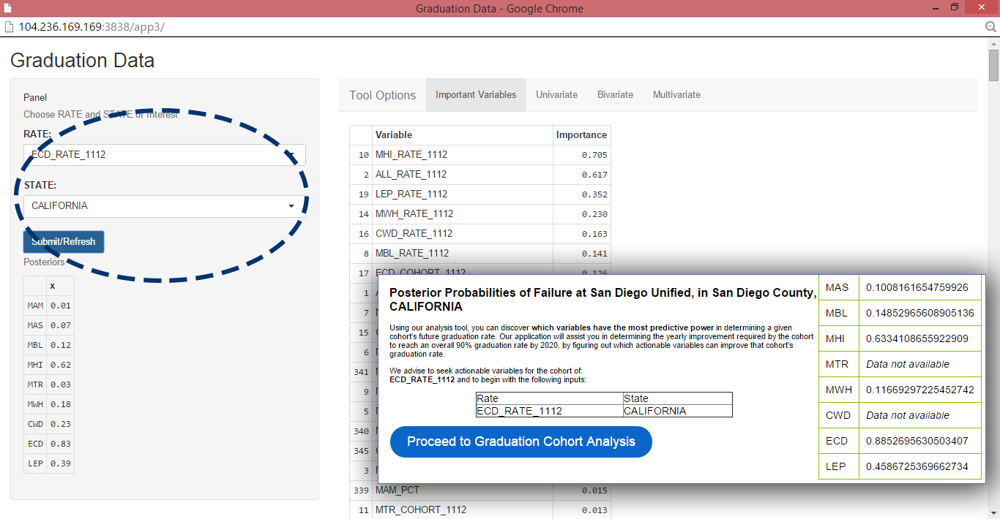

|  | Step 1 Select either of the modes listed. You may select by specific district (Mode 1) or by an entire state (Mode 2). |
|  | Step 2 Select a location. Select a district for Mode 1, or a state for Mode 2. Then click the arrow in the green bar to proceed. |
|  | Step 3 This page generates a report on district or state information. You can see a breakdown of graduation rates by cohort, and a calculation of probabilities of risk of failure for each cohort within the district or state. |
|  | Step 4 Using our analysis tool, you can discover which variables have the most predictive power in determining a given cohort's future graduation rate. Proceed to the analysis tool with the generated suggestion. The cohort with the greatest risk is listed on this generated page. By using current evidence on cohort graduation we can determine which cohorts are of greatest concern based on the number of students failing. Using Baye's Theorem, we calculate the posterior probability of each cohort in the location of interest given that they did not graduate. The expression is written as P({COHORT}|NOT_GRADUATE). |
|  | Step 5 Based of the posterior probabilities of failure calculated on the previous page's results, it is reccomended you plug these variables into the analysis tool first. Having ranked the cohorts that are hindering the overall graduation rate, we can focus on knowing what variables predict their graduation rate. We do so by calculating the information gain of each variable in the dataset as it relates to the given cohort. The tool will generate the top most significant variables that correlate with the input. In this example, we see the strongest connection between ECD_RATE_1112 (Economically Disadvantaged Cohort Rate), and MHI_RATE_1112 (Hispanic Students Cohort Rate). You also have the options of selecting any of the other cohorts, or inputting up to three variables in the analysis app. The user now knowing which cohort to focus on and and which variables may predict graduation rates can now make an informed decision to use variables they find actionable. The user can test the predictive power of each of these variables in a univariate, bivariate, or multivariate linear regression. As the user selects each variable the web app provides them with a suggested course of action knowing that the variable effectively predicts graduation rate. (Aside: Using principal component analysis, we discovered the variation of the data can be fully encompassed by 3 variables, more than that and the model will be over fit.) |
{kind=link}
{kind=link}
{kind=link}
{kind=link}
{kind=link}